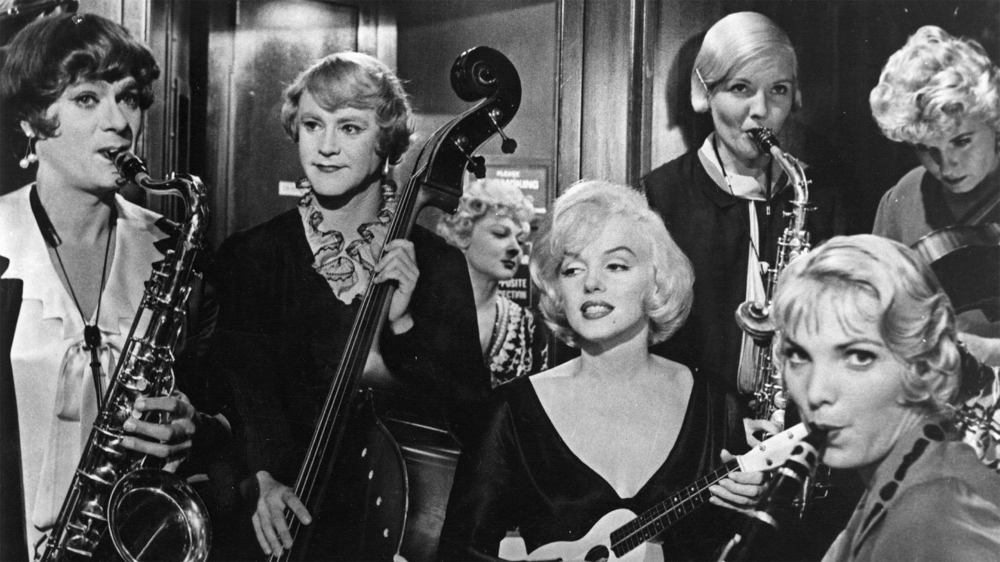
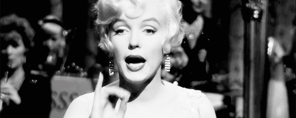

| Сюжет | Мое мнение | |
|---|---|---|
|  | Когда чикагские музыканты Джо и Джерри случайно
становятся свидетелями бандитской перестрелки, они в срочном порядке
смываются на поезде во Флориду, прикинувшись женщинами. Теперь они -
Джозефина и Дафна, новенькие и хорошенькие инструменталистки женского
джаз-бэнда.
До поры до времени их маскировка срабатывает. Но вскоре любвеобильная солистка «западает» на переодетую мужчиной Джозефину, престарелый плейбой влюбляется в Дафну, а босс мафии, разгадав тайну маскарада, решает срочно разделаться со свидетелями. |
Мой любимый фильм! Хорошая комедия для уютного
осеннего вечера с кружечкой какао. Конечно, отдельный лайк за Мерилин Монро.
Смешные шутки и интересный сюжет, который держит твои глаза возле монитора до конца фильма!  |